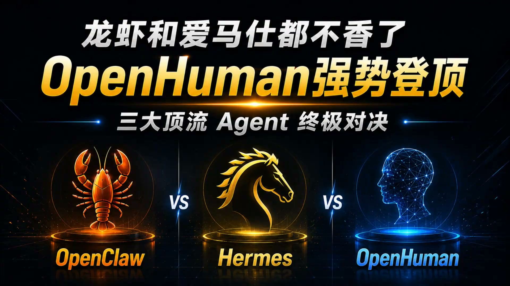

一人公司研究所 Reel｜Lobster、Manus、OpenHuman 三種 AI Agent 敘事的查核筆記
來源是一人公司研究所的 Facebook Reel。公開 metadata 顯示，這支影片以「龍蝦和愛馬仕都不香了？AI 圈現在流行『養人』」作為鉤子，將 Lobster、Manus、OpenHuman 包裝成三種 AI Agent 路線比較。

一句話摘要
這則 Reel 值得保存，但更適合作為「AI Agent 行銷敘事查核」而不是產品排行：Manus 官方定位確實是可執行任務與自動化 workflow 的 action engine；OpenHuman 官方可確認的是 WebGL digital human render engine / SDK，而不是已公開證實的通用 autonomous agent；Lobster 與「三者最新 benchmark 排名」在公開來源中尚未查到足夠官方證據，因此本文保留為社群說法並加註查核限制。
Facebook 公開頁可見內容
- 分享網址：`https://www.facebook.com/share/v/1FzWWX6un1/`
- Canonical：`https://www.facebook.com/reel/1402269048627870`
- 作者：一人公司研究所。
- 公開頁可見指標：約 3.9 萬次觀看、351 個心情、2 則留言、154 次分享。
- 貼文主題：Lobster、Manus、OpenHuman 三種 AI Agent 對比。
- 影片來源標註：B站「AI有點聊」。
貼文主張整理
公開 metadata 中可讀到的主要說法：
- Lobster：走輕量路線，部署簡單、回應快，適合日常任務處理。
- Manus：強項是複雜多步驟 workflow，可拆解任務、分配子任務並整合結果；但設定門檻較高。
- OpenHuman：被描述為「像人一樣思考」的黑馬，不只是執行指令，也會理解意圖、主動補全細節；貼文稱它在最新 benchmark 超越前兩者。
- 對一人公司：若做文案、客服、資料整理，Lobster 可能足夠；若要複雜自動化，Manus 更合適；若要虛擬員工，貼文認為 OpenHuman 最接近。
交叉查核
Manus：可確認為任務執行／工作流型 AI
Manus 官方首頁標題為「Manus: Hands On AI」，description 寫著：`Manus is the action engine that goes beyond answers to execute tasks, automate workflows, and extend your human reach.` 這與貼文中「可處理任務、工作流、自動化」的方向大致吻合。
不過，本文沒有實測 Manus，也沒有確認貼文提到的任何 benchmark 排名；因此只能說「官方定位支援它是 action/workflow 型 AI」，不能說它必然優於其他產品。
OpenHuman：官方可確認的是數位人渲染 SDK，不等同通用 Agent
OpenHuman 官方頁可讀內容是「pure WebGL 2.0 digital human render engine」，重點包含 custom characters、animation graph、facial blendshapes、render pipeline、TTS/lipsync、streaming protocol、embed API 等。也就是說，它公開可查到的核心更像「數位人／avatar 渲染引擎與 SDK」。
這和貼文把 OpenHuman 描述成「像人一樣思考、可當虛擬員工的 AI Agent」之間有落差。若影片另有指向特定 OpenHuman agent 產品或 benchmark，公開 Facebook metadata 並未提供可直接驗證的來源。
Lobster：本次未找到足夠可信官方來源
本次以可直接訪問的公開頁查找 Lobster AI Agent，未取得足以對應貼文描述的官方產品頁。`lobster-ai.com` 顯示為待售網域；`lobsterai.co` 回應內容非常少，無法支持「頂流 AI Agent」或「輕量 agent」的具體產品描述。
因此本文將 Lobster 部分保留為社群貼文說法，不把它寫成已驗證產品能力。
欒帥可用的判讀方式
這則貼文最有價值的不是「三個產品誰第一」，而是提醒一人公司評估 AI Agent 時要分三層：
- 任務層：文案、客服、資料整理是否已足夠。
- 流程層：是否能拆解多步驟任務、串接工具、回收結果。
- 擬人介面層：是否需要數位人、avatar、語音、嘴型同步或品牌人格。
如果要落地到一人公司工作流，應先定義實際任務，例如「每天整理訊息、回覆客戶、產出報表、上架內容」，再選 agent / workflow / digital human 工具；不要只依照短影音裡的排行榜或擬人化名稱決定。
注意事項
- Facebook 登出頁只提供 metadata 與部分可見文字，未取得完整影片逐字稿。
- 貼文稱「最新 benchmark」但 metadata 沒有列出 benchmark 名稱、測試集、日期或連結，因此本文不採信為已證實排名。
- Brave Search API 於本次查核時回傳 token invalid；因此補充查核改用直接訪問可推測官方網站與公開頁內容，並在本文降低結論強度。
- 本文沒有登入 Facebook、B站或任何產品帳號，也沒有實測三個工具。
Why it matters
AI Agent 社群內容很容易把「任務代理」「工作流自動化」「數位人介面」混成同一種東西。這則 Reel 適合放進 AI 學習雷達，是因為它剛好提供一個反例：當短影音用擬人化與排行榜製造焦慮時，真正該保存的是評估框架、可驗證來源與未驗證主張的邊界。